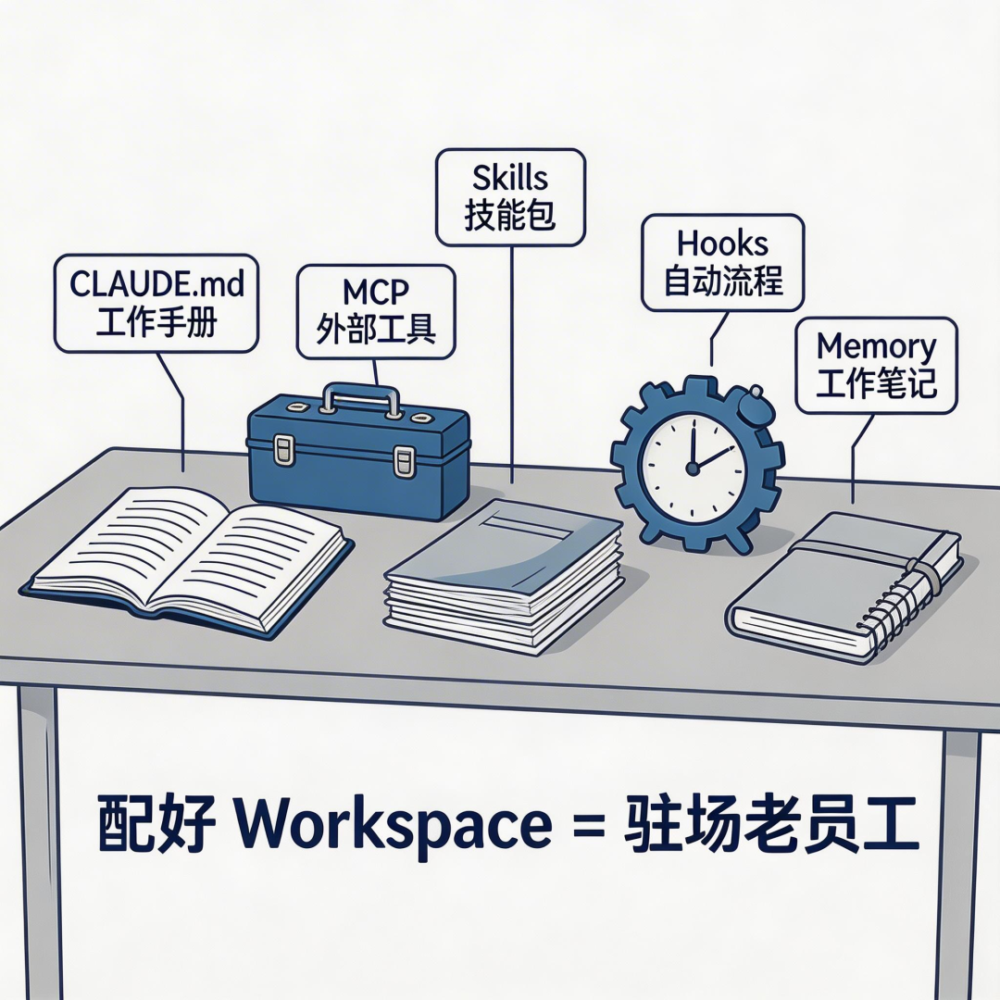
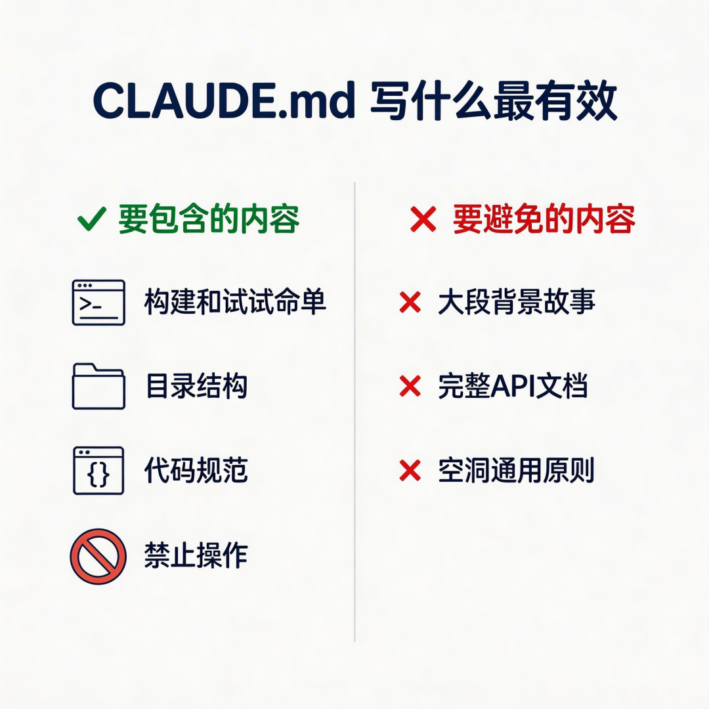
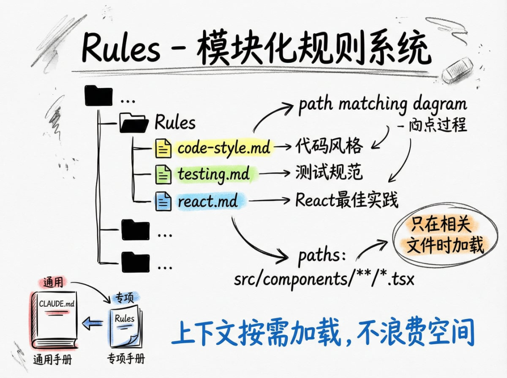
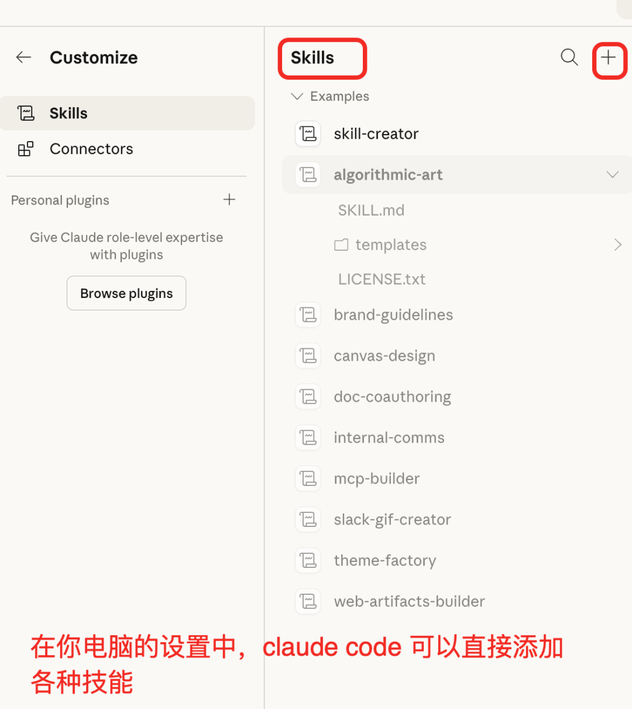
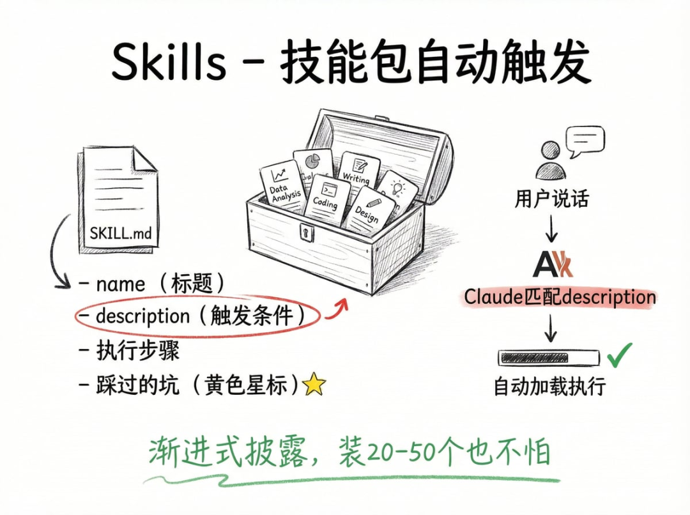
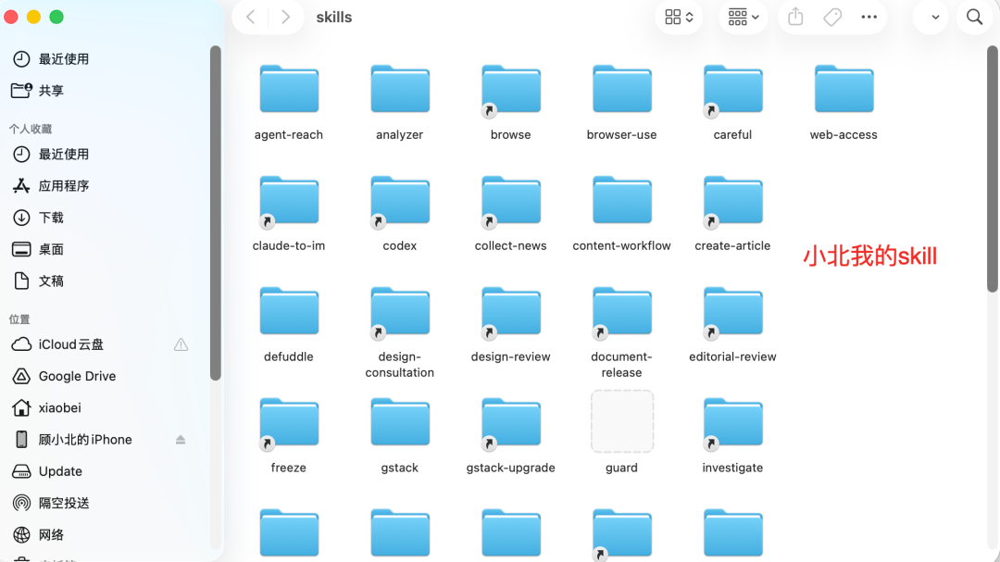
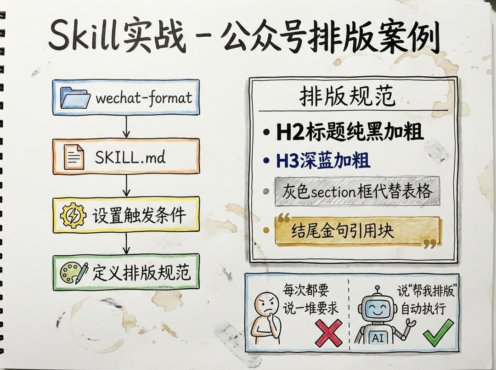
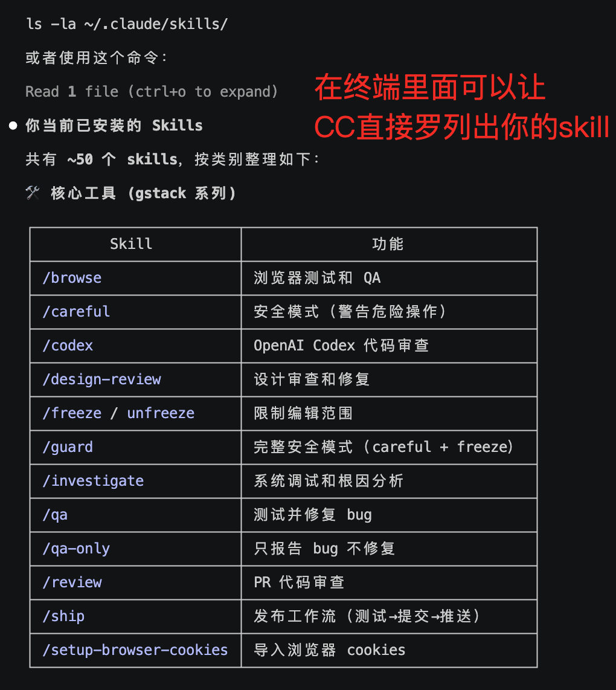
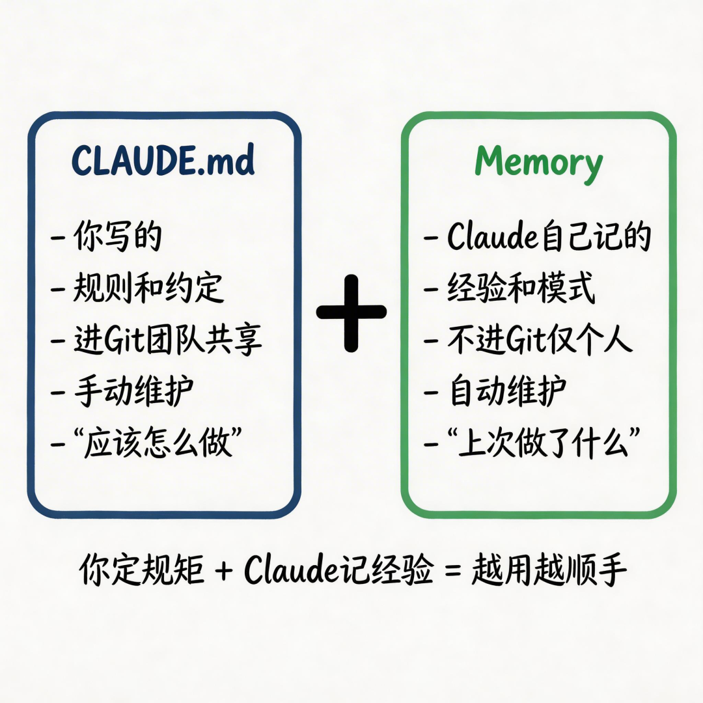

很多人都说 Claude Code 好用。
确实好用
写代码、改 bug、做文案、拆解视频脚本、批量处理数据、搭网站、写爬虫，它能干的事越来越多，而且干得越来越像那么回事。
但你有没有发现一个问题？
你是不是有时候会觉得，他输出总觉得不够稳定，输出质量时好时坏，有时候你明明教过它的东西，下次又忘了。
问题出在哪？
这其实不是 Claude Code 能力不行，很多时候是你没有配好它的底层架构。
真正能把 Claude Code 用好的人，是非常了解它的底层结构 。
这个东西决定了你用 AI 的工作质量是 30 分还是 90 分——是分水岭级别的差距。
但好像很多人不太注重这个。装上就用，能跑就行。结果呢？AI 的能力发挥了三分之一，剩下三分之二一直在沉睡。
基于这个，我写了这篇文章，给真正想发挥 Claude Code 全部功能的人看。
这篇文章，应该可以作为你的 Workspace 配置指南了。我会从以下几个方面，全面、系统地做一次深度拆解：
1、CLAUDE.md -- 整个 Workspace 的大脑，怎么写、写什么、不写什么
2、 Rules — 当一个 CLAUDE.md 不够用时，怎么拆成模块
3、 Skills — 给 Claude 装技能包，让它自动触发正确的工作流
4、 MCP — 给 Claude 一双手，连接搜索、浏览器、数据库等外部能力
5、 Hooks — 让 Claude 学会条件反射，自动格式化、自动存档、自动拦截
• Memory — Claude 自己给自己记的工作笔记，跨会话记忆
按照这个内容来配置，你的 Claude Code 能力会有巨大的进展。每一块都是实操，能直接抄作业。
先看全貌：Workspace 到底是什么
📘 这是什么
你可以把 Workspace 想象成给 Claude 搭了一个"工位"。
一个好工位需要什么？
桌上放着工作手册（CLAUDE.md），告诉它这个项目的规矩；抽屉里有常用工具（MCP），让它能操作外部服务；
有一套技能培训资料（Skills），教它怎么高效完成特定任务；有自动化的工作流程（Hooks），该做的事自动做；
还有一本随手记的笔记本（Memory），上次聊到哪、踩过什么坑，下次打开就能想起来。
这些东西加在一起，就是 Workspace。
📘 为什么重要
没有 Workspace 配置的 Claude Code，就像一个每天来的新实习生——啥都得从头教。
你每次新开对话，都得重新解释项目背景、代码规范、测试命令。
配好了 Workspace 的 Claude Code，就是一个驻场老员工——项目架构门儿清，代码习惯了然于胸，出了问题知道去翻哪个文件。
这就是同一个工具，用出三成功力和九成功力的区别。

📘 全貌长什么样
具体到文件，一个配好的项目有两套配置：
项目级配置（在你的项目文件夹里，提交到 Git，团队共享）：
全局配置（在你电脑的用户主目录下，个人偏好，所有项目都生效）：
两套配置的关系很简单：项目级优先。 项目级提交到 Git，团队共享；全局级是你个人偏好，不进 Git。团队规范统一，个人习惯各管各。
搞清楚全貌了，下面一个一个来。
CLAUDE.md：整个 Workspace 的大脑，非常重要
📘 这是什么
CLAUDE.md 是一个 Markdown 文件，放在项目根目录。
它的作用只有一个：每次你打开 Claude Code，它做的第一件事就是读这个文件。 不管你开多少次新对话，这个文件的内容永远会被加载进去。
说人话就是——你写在 CLAUDE.md 里的东西，Claude 永远记得。
📘 为什么重要
你每天重复跟 Claude 解释"用什么框架""测试命令是什么""代码规范怎么写"——本质上就是因为没有这个文件。
把这些信息写进 CLAUDE.md，一劳永逸。
更关键的是，CLAUDE.md 有个很多人不知道的特性——当对话太长被压缩（/compact）时，CLAUDE.md 会被完整重新注入。 也就是说，写在里面的指令永远不会丢失。这是对话里随口说的指令做不到的。
所以你最核心的东西，一定要写在 CLAUDE.md 里，而不是靠在对话里反复提醒。
📘 怎么写效果最好
很多人第一反应是把项目 README 贴进去，或者写一大堆"请写出高质量代码"。这两种都是典型的错误做法。
CLAUDE.md 要短、要具体、要能直接执行。 官方建议 200 行以内，我的经验是越短越好——短到每一行都有用。
你就想象：一个高级工程师入职第一天，你给他看一份文档，他看完就能开始干活。那份文档应该写什么？
第一，构建和测试命令
这是最实用的——Claude 改完代码想验证，得知道命令是什么。npm run dev 启动开发服务器，npm run test 跑测试，npm run build 做生产构建。一行一个，清清楚楚。
第二，目录结构
不用写很细，写清楚"去哪找什么"就够了。比如 src/app/ 是页面和 API 路由，src/components/ 是 UI 组件，prisma/ 是数据库相关的。Claude 知道了目录结构，改代码时就不会找错地方。
第三，代码规范
你团队的约定——命名规则、组件写法、函数风格——Claude 不知道，你不告诉它就不知道。写下来，它就会遵守。
第四，禁止操作
不能删的文件、不能动的配置、不能用的依赖。这个非常重要——Claude 有时候"手快"，你不拦它就干了。
比如"不动 prisma/schema.prisma 除非我明确要求"、"不碰 .env 文件"，写进去就是硬规则。

反过来，以下东西不该写进去：
• 大段项目背景故事 — Claude 不需要知道你为什么做这个项目
• 完整的 API 文档 — 太长了，用 @ 引用外部文件就行
• 空洞的通用原则 — "请写出高质量代码"等于没说
• 跟当前项目无关的个人偏好 — 那个放全局 CLAUDE.md 里
核心原则：每一行都要有指导价值。如果 Claude 读了这一行之后行为没有任何变化，就删掉。
📘 进阶用法：多份 CLAUDE.md + 引用外部文件
CLAUDE.md 不只能写一份。你可以在不同的文件夹下放不同的 CLAUDE.md，Claude 进到哪个文件夹，就自动读哪份规则。
举个例子：你有个项目，写公众号文章和做数据分析是两套完全不同的工作流。
你可以在"文章"文件夹下放一份 CLAUDE.md 写排版规范，在"数据"文件夹下放另一份写分析流程。Claude 自己知道该用哪套，不用你切换。
另外，如果有些内容太长，不适合全塞进 CLAUDE.md 里（比如一份详细的操作手册、一个完整的风格指南），可以用 @ 符号引用外部文件。Claude 需要的时候会自动去读，你不用每次都复制粘贴一大段进去。
当你的项目变大——前端、后端、测试、部署各有各的规范——全塞在一个 CLAUDE.md 里就太臃肿了。
.claude/rules/ 文件夹就是用来解决这个问题的。
你可以把不同领域的规范拆成独立的文件，每个文件管一块事。比如 code-style.md 管代码风格，testing.md 管测试规范，react.md 管 React 组件写法。
说白了，CLAUDE.md 是通用员工手册，rules 是各岗位的专项手册。
📘 为什么重要
最大的价值不是拆分本身，而是 rules 文件支持路径匹配。
什么意思？你可以在 rules 文件顶部指定一个路径规则，比如 paths: "src/components/**/*.tsx"。
这样 Claude 只有在操作 React 组件文件时，才会加载这条规则；操作后端代码时，这条规则根本不出现。
这解决了一个核心问题——上下文空间是有限的，每条规则都占空间。 路径匹配让规则按需加载，不浪费宝贵的上下文。你可以写几十条规则，但 Claude 在任何时刻只加载跟当前工作相关的那几条。

📘 怎么用效果最好
关键就两点：
第一，每个 rules 文件只管一件事
不要在一个文件里又写代码风格又写测试规范。拆细了，路径匹配才精准。
第二，路径匹配用好了是杀手锏
在 rules 文件顶部加 YAML frontmatter，用 paths 字段指定生效范围。语法跟 .gitignore 一样
**/*.ts 匹配所有 TS 文件，src/components/** 匹配 components 目录下的所有文件。
比如你可以写一个 react.md ，
顶部加上 paths: "src/components/**/*.tsx" ，里面写"所有组件必须有 Props 类型定义"、"样式用 Tailwind 不写内联 style"。
Claude 只在碰到 React 组件时才看这些规则，非常精准。
如果说 CLAUDE.md 是"员工手册"，Skills 就是"岗位技能培训教材"。
你可以把 Skill 想象成一个工作交接 SOP 大礼包——把某项工作的执行方法、该注意什么、参考模板、常见错误全打包在一起。Claude 装上这个包，就知道怎么干这件事了。
比如 Anthropic 官方自带的 PDF Skill，教 Claude 怎么处理 PDF——提取文本、合并拆分、填表单。

你说"帮我把这三个 PDF 合成一个"，Claude 自动识别出该用 PDF Skill，按照 Skill 里写的步骤执行。
非技术人员完全可以做 Skill。
一个 Skill 最核心的就是一个叫 SKILL.md 的文件，纯自然语言写成，不需要写代码。
Anthropic 官方的 brand-guidelines Skill，里面就只有品牌颜色、字体规范这些文字信息。但 Claude 装上之后，做设计就会自动遵循这些规范。
📘 为什么重要
Skill 和普通命令最大的区别是——它能自动触发。
你不用记任何命令名。你说"帮我做个产品介绍的 PPT"，Claude 自动识别出应该用 PPT Skill；你说"review 一下这段代码"，Claude 自动触发代码审查 Skill。
这靠的是 SKILL.md 顶部的 description 字段。
Claude 读到你的请求后，会拿你的话跟所有 Skill 的 description 做匹配。匹配上了就自动加载并执行，匹配不上就忽略。
所以 description 怎么写，直接决定了 Skill 好不好用。 这是 Anthropic 官方 33 页指南里反复强调的
description 要写"什么时候该用"，不要写"我是什么"。
❌ "这是一个代码审查 Skill"
✅"当用户要求 review 代码、检查代码质量、或者提交前审查时使用"
前者是自我介绍，Claude 不知道什么时候该用；后者是触发条件，Claude 一看就能匹配。

📘 怎么用效果最好
第一，不用担心装多了撑爆上下文。
很多人会想：装了一堆 Skill，上下文不就满了吗？不会。因为 Skill 有个聪明的设计叫渐进式披露——三层信息，按需加载：
第一层，只有 name 和 description，几行字而已，永远加载在上下文里，用来判断要不要触发。第二层是 SKILL.md 正文，只有匹配成功才会加载进来。第三层是 scripts、references、assets 目录里的文件，Claude 执行过程中需要的时候才去读取。
所以你可以同时装 20-50 个 Skill，日常只有 description 占一点点空间。官方数据是：所有 Skill 的 description 加起来，上下文预算大概是窗口的 2%。
第二，Skill 里面最有价值的部分不是"做什么"，而是"别做什么"。
你或团队踩过的坑——某个 API 的怪异行为、某个库的已知 bug、某个配置的易错点——全写进 SKILL.md 的"踩过的坑"章节。Claude 会读这些警告并在执行时主动规避。
这比写十遍"正确步骤"都有用。因为 Claude 不缺执行能力，它缺的是"知道哪里有坑"。你把坑的位置标出来，它就不会踩。
这是很多人最想知道的部分。其实做一个 Skill 比你想象的简单得多——核心就是写一份工作文档。
第一步：想清楚你要封装什么。
回顾一下你日常的工作流，哪些操作是重复的？每次都要跟 Claude 解释一遍的？那就是最适合做成 Skill 的东西。
比如：每次创建一个新的 API 接口，你都要跟 Claude 说"在 src/app/api/ 下建文件、定义类型、加参数校验、写测试"。这个流程固定了，就可以封装成 Skill。

比如：每次做代码 review，你都要提醒 Claude "检查错误处理、看类型有没有 any、确认测试覆盖率"。这个清单也可以封装。
不一定是技术操作。 你每次写公众号文章的排版流程、每次做竞品分析的步骤、每次整理客户反馈的方法——只要是可以标准化的工作流，都能做成 Skill。
第二步：建一个文件夹
在 .claude/skills/（项目级）或 ~/.claude/skills/（全局）下面，建一个文件夹。名字用小写 + 连字符，比如 create-api-route、review-code、write-article。
文件夹里只需要一个文件：SKILL.md。这个名字是固定的，不能改。
第三步：写 SKILL.md
这是最关键的一步。SKILL.md 由两部分组成：顶部的 YAML frontmatter 和下面的正文。
顶部 frontmatter 决定了"什么时候触发"：
1、name — 你的 Skill 名字
2、description（最重要）— Claude 靠它判断要不要自动触发。写"什么时候该用"而不是"我是什么"
3、allowed-tools（可选）— 限制 Skill 可使用的工具，比如只读分析限制为 Read、Grep、Glob，防止误操作
4、disable-model-invocation（可选）— 设为 true 表示只能手动触发，适合部署、发布等有副作用的 Skill
正文就是你的工作流文档，推荐分三个章节：
执行步骤 — 按顺序列出具体要做什么，每一步尽量具体。不要写"创建必要的文件"，要写"在 xx 目录下创建 xx 文件"
踩过的坑 — 把你和团队踩过的坑写进去。前面讲过了，这是整个 Skill 里最有价值的部分
模板/参考（可选）— 如果有标准模板，放在 assets/ 目录下，正文里指向它
第四步：测试和迭代
Skill 写好了，试用几次。看看 Claude 触发的时机对不对（不对就调 description）、执行步骤有没有遗漏（有就补）、有没有新的坑需要记录（有就加）。
好的 Skill 不是一次写完的，是用出来的。用几次之后你就知道哪里需要补充、哪里写多了可以删。
第五步：决定放哪里
如果这个 Skill 是通用的（比如代码 review、文章排版），放在全局 ~/.claude/skills/ 下，所有项目都能用。
如果是项目专属的（比如特定 API 的创建流程），放在项目的 .claude/skills/ 下，提交到 Git，团队共享。
在这这里，小北我用一个非技术的例子来串一遍，更容易理解。
假设你每次让 Claude 帮你排版公众号文章，都要重复说一堆要求：
"标题用 H2 加粗"、
"不要用 markdown 表格，用灰色方框"、
"结尾加金句引用块"、
"关键句加粗但别全篇都粗"……
烦不烦？烦。那就做成 Skill。
建一个文件夹wechat-format，里面放一个 SKILL.md。
顶部 frontmatter 写触发条件：description 写"当用户要求排版公众号文章、微信文章格式化、或者说'帮我排版'时使用"。
这样你以后只要说"帮我排版一下"，Claude 就自动触发。
正文写你的排版规范：H2 标题纯黑加粗、H3 深蓝加粗、每节只有 1-2 句粗体、不用 markdown 表格改用灰色 section 框、结尾用引用块加金句……把你平时反复交代的那些要求全写进去。
加一个"常见错误"章节：比如"不要在正文里给关键词上色"、"代码块和灰色框不能混用"、"禁止用 <div> 包裹全文设字号"。这些是你踩过的坑，写进去 Claude 就不会再犯。

从今往后，你说"帮我排版一下"，Claude 自动按照你的标准执行，不用再重复交代。你省的不是一次的时间，是以后每一次的时间。
这个思路放到任何场景都一样，做竞品分析、整理客户反馈、写周报、做数据报告——只要是你反复做的事，都能用同样的方式封装成 Skill。

📘 值得装的现成 Skill
不想自己做也没关系，很多现成的 Skill 可以直接装。
Claude Code 自带五个 Skill，装完就能用。其中 /simplify 是三路并行代码审查（复用性、质量、效率三个维度同时跑），/batch 是并行处理（把任务拆成多个单元同时执行），/loop 是定时巡检（比如每 5 分钟检查一次部署状态）。
第三方 Skill 优先装这几个
Skill Vetter （安全必装，防止恶意 Skill 投毒，装了之后 Claude 会自动检测你安装的每个 Skill 有没有藏恶意代码，地址：
https://clawhub.ai/spclaudehome/skill-vetter 、
agent-browser （让 Claude 能自动操作浏览器）、
summarize （长内容一键压缩摘要）、
find-skills （搜索 Skill 生态，发现更多好用的 Skill）。
安装就一行命令，比如
npx skills add vercel-labs/agent-browser@agent-browser -g -y。
加 -g 表示装到全局，所有项目都能用。
项目专属的 Skill 就放在 .claude/skills/ 下，提交到 Git。
MCP 全称 Model Context Protocol，翻译过来就是"模型上下文协议"。
听着很技术对吧？
说人话：MCP 就是一个标准化的插件接口。 每个 MCP 插件提供一组工具，Claude 按需调用。
装了搜索的 MCP，Claude 就能上网搜东西；装了浏览器的 MCP，Claude 就能操作网页；装了飞书的 MCP，Claude 就能直接读写你的飞书文档。
没有 MCP 的 Claude，只能在你的代码文件里干活。有了 MCP 的 Claude，能伸手到外面的世界
这就是为什么我说它是"给 Claude 一双手"。
📘 为什么重要
CLAUDE.md 告诉 Claude 怎么思考，Skills 告诉它按什么流程干活，MCP 解决的是"能不能做"的问题。
没有 MCP，Claude 遇到需要搜索的场景只能跟你说"我没法联网"；有了搜索 MCP，它自己就能去查。
没有 MCP，Claude 想帮你操作飞书只能给你一段代码让你自己跑；有了飞书 MCP，它直接帮你操作完。
这是从"助手"到"代理人"的关键一步。
但这里有个很重要的注意事项——每个 MCP 插件会吃掉 10-20K tokens 的上下文空间。
Claude Code 总共 200K 的上下文窗口，系统占 15-20K，CLAUDE.md 和 Memory 占 5-10K。
装五六个 MCP，光工具描述可能吃掉 60-80K——三分之一没了。
所以原则是：用什么装什么，不用的及时删。
别贪多。
📘 怎么用效果最好
选哪些 MCP 装，按四层来想就清楚了。每层选 1-2 个够用：
第一层：搜索 — 让 Claude 能上网查资料
推荐 Tavily（专为 AI Agent 设计，每月 2000 次免费）或 Open-WebSearch（完全免费，不需要 API Key）
第二层：阅读 — 让 Claude 能读网页内容
推荐 Jina Reader（URL 前加前缀即可转 Markdown）或 Agent-Reach（支持微信/YouTube/小红书等多平台）
第三层：浏览器操控 — 让 Claude 能像人一样操作网页
推荐 Playwright MCP（微软官方）。大部分人不需要这层，有自动化测试需求再装
第四层：数据采集 — 让 Claude 能批量抓取数据
推荐 Apify，15000+ 现成爬虫，Instagram、TikTok、YouTube 都有。做跨境电商的话这层很有用
大部分人装第一层 + 第二层就够日常用了。安装就一行命令：
claude mcp add tavily npx @anthropic-ai/mcp-server-tavily，加 --global 装到全局。
MCP 和 Skills 的关系
这个很多人搞混，但其实很简单：
MCP 解决"能不能做"，Skills 解决"做得好不好"。
只装 MCP 不写 Skill，Claude 能调工具但不知道正确的工作流程。比如你装了飞书 MCP，Claude 确实能操作飞书了。
但如果你再写一个 Skill 告诉它"查多维表格要先 list tables → 再 list fields → 最后 search records，每次最多查 500 行"——出来的效果完全不一样。
前者经常出错，后者稳定输出。
MCP + Skill 配合，才是稳定输出的关键。
Hooks 是 Workspace 里最被低估的功能。
它的本质非常简单：在 Claude 执行特定操作的前后，自动触发你预设的动作。
类比一下就懂了——你跟员工说"每次改完代码，自动跑一下格式化工具"、"每次要删文件之前，先确认一下是不是在删重要的东西"。这就是 Hook 在做的事。
📘 为什么重要
没有 Hooks 的时候，很多事要么靠你手动去做，要么靠你在 CLAUDE.md 里反复叮嘱（而且 Claude 不一定每次都记得执行）。
有了 Hooks，这些事变成了强制自动执行——不是 Claude "应该做"，而是"一定会做"。
比如你想让 Claude 每次改完代码都跑格式化，写进 CLAUDE.md 只是个"建议"，Claude 有时会忘。但写成 Hook，就是硬性的、100% 触发的自动流程。
更厉害的是 PreToolUse Hook，它可以在 Claude 执行操作之前先做检查。
如果检查不通过（脚本返回 exit code 2），操作直接被阻断。
相当于给 Claude 装了一道安全门：要删 .env 文件？拦住。
要 rm -rf？拦住。要改数据库配置？拦住。
📘 怎么用效果最好
Hooks 配置写在 settings.json 里。能挂载的事件有 17 个，覆盖了从会话开始到结束的完整生命周期。
但日常最实用的就两个：PostToolUse（工具调用后自动执行）和 PreToolUse（工具调用前做检查/拦截）。
最推荐的第一个 Hook：自动 Git 存档。
配上之后，Claude 每做一步操作（改文件、跑命令），都会自动 commit 一个 checkpoint。
出了问题 git log 一查，每一步干了什么清清楚楚，随时回滚到任意一步。我去，真的是那种用完之后想问自己以前怎么活过来的。
第二个推荐：自动格式化。
Claude 每次用 Edit 或 Write 改完文件，自动执行你的 Prettier / ESLint 脚本。
好处是 Claude 不用浪费 token 去调格式化命令，格式 100% 符合你的配置。
第三个推荐：拦截危险操作。
在 PreToolUse 上挂一个检查脚本，检查 Claude 是不是在动 .env、是不是执行 rm -rf、是不是要改关键配置文件。检查不通过就阻断。
另外，Hooks 不只能跑 shell 命令，官方支持四种类型：command（执行命令，最常用）、
http（发请求通知外部系统，比如往 Slack 发消息）、prompt（用轻量模型做快速判断）、
agent（启动子 Agent 处理复杂检查）。大部分场景用 command 就够了。
其实Memory是不用自己配置的，它是 Claude 在工作过程中自己记下来的笔记。
你跟 Claude 调试了半天终于解决了一个 bug，Claude 会把这个调试经验记下来。
你纠正了 Claude 的某个习惯（"别用 any，要定义类型"），Claude 也会记下来。这些笔记存在 ~/.claude/projects/<项目路径>/memory/ 目录下。
📘 为什么重要
以前每次关掉终端，记忆就清零了。下次打开，Claude 对之前的对话一无所知。
现在有了 Auto Memory，Claude 会自动记住：项目怎么构建、调试时踩了什么坑、你的编码偏好、哪个文件是干什么的。下次新开对话，它直接回忆上次的进度。
这意味着 Claude 会越用越顺手。 它记住了你的习惯，记住了项目的坑，不需要你反复教。
启动时 Claude 会加载 MEMORY.md 的前 200 行（约 25KB），其他主题文件按需读取。常用记忆随时在线，又不吃太多上下文。而且 Memory 不进 Git，按项目隔离，是你个人的。

📘 怎么用效果最好
搞清楚 CLAUDE.md 和 Memory 的分工。 一句话：CLAUDE.md 管"应该怎么做"（规则和约定），Memory 管"上次做了什么"（经验和模式）。
1、CLAUDE.md：你写的 → 规则和约定 → 进 Git 团队共享 → 手动维护
2、Memory：Claude 自己记的 → 经验和模式 → 不进 Git 仅个人 → 自动维护
两者配合使用效果最好。你负责定规矩，Claude 负责记经验。如果想查看或编辑 Memory，用 /memory 命令。
它会列出所有加载的 CLAUDE.md 和 Memory 文件，你可以编辑内容、开关某个文件。
如果在 CI 环境不需要 Memory，设环境变量：
CLAUDE_CODE_DISABLE_AUTO_MEMORY=1 就行。
最后说一句。
这些东西不用一次全配完。先把 CLAUDE.md 写好，把最核心的规范写进去
光这一步，体验就会有质的变化。
然后 Skills 从封装你自己的重复工作流开始，MCP 按需加搜索和阅读，Hooks 配一个自动 Git 存档。一周之内你就能感受到那个"对了"的感觉。
关键不是你装了多少东西，而是你有没有把自己的工作方式"教给" Claude。
教得越清楚，它干得越好。
工具不怕强，怕你不会调。调好了，它就是你的人。